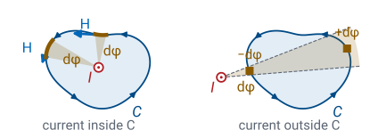
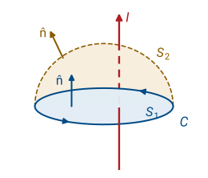
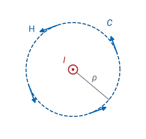
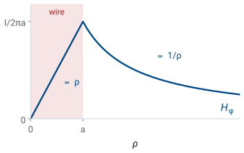

L29 - Ampere’s Law#
Ampere's Law
Today we find the magnetic field of a symmetric current without integrating the Biot-Savart law.
Lesson 29 · Module 3: Magnetostatics · Maj Ellis · Dr. Neil Rogers
Learning Objectives
- I can use Ampere's Law to calculate the magnetic field at an observation point for simple magnetostatic systems.
Lesson 28 found the magnetic field of a current by adding up the Biot-Savart law over every piece of the current. Like Coulomb’s law in Module 2, that method always works, but even a straight wire requires an integral along its length. Today we derive Ampere’s law, which relates the magnetic field around any closed path to the current passing through it. It plays the part for magnetic fields that Gauss’s law played for electric fields in Lesson 20: when the current has enough symmetry, the law gives the field in a few lines. We use it for a line current and a round wire, then shrink the path to a point to get the law’s point form, \(\nabla\times\mathbf{H} = \mathbf{J}\). Lesson 30 applies the law to the coaxial line, the solenoid, and the toroid.
Where We Were
Lesson 28: the Biot-Savart law gives the field of a long straight current \(I\) on the \(z\) axis:
Lesson 28 integrated the Biot-Savart law along a straight wire carrying a steady current \(I\) along \(+\hat{\mathbf{z}}\). Far from the ends, the magnetic field intensity \(\mathbf{H}\) circles the wire in the \(\hat{\boldsymbol{\phi}}\) direction, counterclockwise when the current comes toward us, and its magnitude falls off as \(1/\rho\). The magnetic flux density is \(\mathbf{B} = \mu\mathbf{H}\), with \(\mu = \mu_r\mu_0\) from Lesson 2. We write Ampere’s law in terms of \(\mathbf{H}\) because, for currents surrounded by one uniform material, \(\mathbf{H}\) depends only on the current and not on \(\mu\), just as \(\mathbf{D}\) depended only on the charge in Gauss’s law. Lesson 31 shows how a boundary between materials changes \(\mathbf{H}\). Today we start from this field and ask what happens when we add up \(\mathbf{H}\) along a closed path around the wire.
Circulation
The circulation of \(\mathbf{H}\) around a closed path \(C\):
Its units are amperes.
The right-hand rule ties the direction around \(C\) to the surface it bounds.
The circulation of \(\mathbf{H}\) adds up the component of \(\mathbf{H}\) along a closed path \(C\). We break the path into short steps \(d\mathbf{l}\), each pointing in the direction of travel, and add \(\mathbf{H}\cdot d\mathbf{l}\) over every step. A field that runs along the path contributes \(H\ dl\), and a field perpendicular to it contributes nothing. Since \(\mathbf{H}\) is in A/m and \(dl\) in meters, circulation has units of amperes. The circle on the integral sign marks a closed path, the same notation Lesson 22 used for \(\oint_C \mathbf{E}\cdot d\mathbf{l} = 0\). The path is the edge of a surface, and the right-hand rule links the two: curl the fingers of the right hand in the direction of travel, and the thumb gives the positive normal of the surface. Lesson 17 used the same convention for Stokes’ theorem. It is the rule of Lesson 28 seen from the other side: with the right thumb along a current through the surface, the fingers curl the way \(\mathbf{H}\) circles it, so a current along the normal gives a positive circulation.
The Circulation Around a Line Current

We take any closed path \(C\) in a plane perpendicular to the wire and work out one step \(d\mathbf{l}\). Only the part of the step along \(\hat{\boldsymbol{\phi}}\) survives the dot product, and from Lesson 17 that part is \(\rho\ d\phi\), where \(d\phi\) is the angle the step sweeps as seen from the wire. The \(\rho\) in the step cancels the \(1/\rho\) in the field, so each step contributes \(I/2\pi\) times its angle, however far from the wire it lies and however the path tilts there. The left panel of the figure shows a near step and a far step that sweep the same angle \(d\phi\). The far step sees a weaker field, drawn as a shorter arrow, but it is longer, and the two effects cancel exactly because the field falls off as \(1/\rho\).
Now we go all the way around; “in” and “out” in the equation mean the wire is inside or outside \(C\). If the wire is inside \(C\), the angle as seen from the wire grows steadily by \(2\pi\), and the circulation is exactly \(I\). If the wire is outside, as on the right of the figure, the angle grows along one side of the path and shrinks by the same amount along the other, so the total angle is zero, and so is the circulation. This is the same argument Lesson 20 made with solid angle, one dimension lower.
Ampere’s Law
\(S\) is any surface whose edge is \(C\), with its normal set by the right-hand rule.

A collection of straight currents is a sum, and the circulation of the sum is the sum of the circulations. Currents that pass through the path contribute their current, and currents outside it contribute nothing. A current that passes through in the direction of the thumb counts as positive, and one in the opposite direction counts as negative. The result is Ampere’s law: the circulation of \(\mathbf{H}\) around any closed path equals the current enclosed, \(I_\text{encl}\). When the current is spread out with a density \(\mathbf{J}\) in A/m², the current enclosed is the flux of \(\mathbf{J}\) through a surface \(S\) bounded by the path. Nothing about the shape or size of the path appears in the result.
Any surface with \(C\) as its edge gives the same enclosed current, as the figure shows for a flat surface \(S_1\) and a dome \(S_2\). Together the two surfaces close a volume. Lesson 27 showed that a steady current has \(\oint \mathbf{J}\cdot d\mathbf{s} = 0\) over every closed surface, so the current that enters the volume through one surface leaves through the other, and the flux of \(\mathbf{J}\) is the same through both.
So far the derivation covers straight currents only. The loops of Lesson 28, the solenoid and toroid of Lesson 30, and the boundary loop of Lesson 31 are not straight, so the last two derivation frames of this lesson prove the law for any steady current, starting from the Biot-Savart law. Module 4 adds a second term for currents that change with time.
Explore: Path Independence
The widget places a \(3\) A current coming out of the page and a \(2\) A current going into it near a closed path traversed counterclockwise. The outline is blue where \(\mathbf{H}\) runs along the direction of travel and red where it runs against it, and it is thicker where the component along the path is larger. The middle readout is the line integral, computed numerically in 2000 steps around the path. Grow the circle, and its length rises while the circulation holds at 3.00 A. Switch to the lumpy path, and \(\mathbf{H}\) varies along every part of it, but the total does not change. Slide the path until it also encloses the \(2\) A current, and the circulation drops to 1.00 A; slide it off both currents, and blue and red cancel to zero.
Using Ampere’s Law
Use symmetry to find the direction of \(\mathbf{H}\) and what it depends on.
Choose an Amperian path on which \(\mathbf{H}\) is tangent and constant, or perpendicular.
Evaluate \(\oint_C \mathbf{H}\cdot d\mathbf{l}\) and \(I_\text{encl}\).
Solve for \(H\); then \(\mathbf{B} = \mu\mathbf{H}\).
Ampere’s law holds for every closed path, but it gives the field only when we can pull \(H\) out of the integral. That requires a path built to match the symmetry of the current. On each piece of a good Amperian path, either \(\mathbf{H}\) runs along the path with the same magnitude everywhere on that piece, so the integral is \(H\) times the length, or \(\mathbf{H}\) is perpendicular to the path, so that piece contributes nothing. The path is an imaginary curve we draw through the point where we want the field. The method is the one Lesson 20 used for Gauss’s law, with a path in place of a closed surface and current in place of charge.
Infinite Line Current

We test the method on the case Lesson 28 already solved. An infinite straight current on the \(z\) axis looks the same when we slide it along \(z\) or rotate it about the axis, so \(\mathbf{H}\) can depend only on \(\rho\). Each current element points along \(\hat{\mathbf{z}}\), and the Biot-Savart law makes its field perpendicular to the element, so \(\mathbf{H}\) has no \(z\) component. It has no \(\rho\) component either: Gauss’s law for magnetism from Lesson 28 says the net flux of \(\mathbf{B}\) out of a closed cylinder around the wire is zero, and a radial \(\mathbf{B}\) would give a flux of \(2\pi\rho L\ \mu H_\rho\) through the side. That leaves \(\mathbf{H} = \hat{\boldsymbol{\phi}}\ H_\phi(\rho)\).
The matching path is a circle of radius \(\rho\) centered on the wire. On it, \(\mathbf{H}\) is tangent and constant, and the step from Lesson 17 is \(\rho\ d\phi\) along \(\hat{\boldsymbol{\phi}}\). The circulation is \(H_\phi\) times the circumference \(2\pi\rho\), and the circle encloses the whole current \(I\). Dividing recovers the Biot-Savart result of Lesson 28 without an integral along the wire.
Worked Example: The Field Near a Wire
\(I = 10\) A, \(\rho = 1\) cm, in air:
Worked example — the field 1 cm from a wire
A long straight wire carries a steady \(10\) A. At \(\rho = 1\) cm from its axis, in air,
and the flux density is
The Earth’s field at the surface is about \(50\ \mu\text{T}\), so this wire produces four times the Earth’s field at 1 cm, and a compass held there points around the wire rather than north. The field falls as \(1/\rho\), so it matches the Earth’s field at 4 cm and is a tenth of it at 40 cm. That is why a compass near a wire carrying a few amperes misreads by a large angle.
A Round Wire with Uniform Current

A real wire has a radius \(a\), and at DC the current \(I\) spreads uniformly over its cross section with density \(J = I/(\pi a^2)\) along \(\hat{\mathbf{z}}\). The symmetry is the same as the line current’s, so the path is the same circle and the left side is again \(2\pi\rho\ H_\phi\). All that changes is the current enclosed. For a circle inside the wire, \(\rho < a\), the enclosed current is the flux of \(\mathbf{J}\) through the disk of radius \(\rho\), using \(\rho'\) for the integration variable:
For a circle outside the wire, the radial integral stops at \(a\) and the circle encloses all of \(I\).
Inside the wire, the enclosed current grows as \(\rho^2\) while the circumference grows as \(\rho\), so the field grows in proportion to \(\rho\) and is zero on the axis. Outside, the field is that of a line current. The two expressions agree at \(\rho = a\), where the field is largest, \(I/(2\pi a)\).
The Point Form of Ampere’s Law
The integral form relates the field on a path to the current through a whole surface. To get a statement about a single point, we use Stokes’ theorem from Lesson 17, which turns the circulation around \(C\) into the flux of the curl through any surface \(S\) bounded by \(C\). Ampere’s law says the same circulation equals the flux of \(\mathbf{J}\) through the same surface, so the two surface integrals are equal. That is true for every surface, however small, and wherever we put it. If \(\nabla\times\mathbf{H}\) and \(\mathbf{J}\) differed at some point, a small surface around that point would make the two integrals differ, so the integrands must be equal everywhere. The result is the point form of Ampere’s law: the curl of \(\mathbf{H}\) at a point equals the current density at that point. Where there is no current, \(\nabla\times\mathbf{H} = 0\), even if \(\mathbf{H}\) itself is large.
The point form agrees with Lesson 27. The divergence of any curl is zero: in Cartesian components, \(\nabla\cdot\left(\nabla\times\mathbf{H}\right)\) is a sum of mixed second derivatives such as \(\partial^2 H_z/\partial x\ \partial y - \partial^2 H_z/\partial y\ \partial x\), which cancel in pairs. Taking the divergence of both sides of \(\nabla\times\mathbf{H} = \mathbf{J}\) therefore gives \(\nabla\cdot\mathbf{J} = 0\), the condition Lesson 27 found for a steady current. A current that piled charge up somewhere would contradict Ampere’s law in this form; Module 4 repairs the law for that case.
Checking the Point Form on the Wire
For \(\mathbf{H} = \hat{\boldsymbol{\phi}}\ H_\phi(\rho)\), only one term of the curl survives:
We check the point form against the round wire. Lesson 17 gives the curl in cylindrical coordinates. With only a \(\phi\) component that depends only on \(\rho\), every derivative with respect to \(\phi\) or \(z\) is zero, and the \(\rho\) and \(\phi\) components of the curl vanish. The \(z\) component is \((1/\rho)\ d(\rho H_\phi)/d\rho\). Inside the wire, \(\rho H_\phi\) grows as \(\rho^2\), and the curl is the current density \(I/(\pi a^2)\), exactly as the point form requires. Outside, \(\rho H_\phi = I/2\pi\) is a constant, and the curl is zero, as it must be where there is no current. Curved field lines do not by themselves mean a nonzero curl: the curl measures the circulation around a small loop at the point, and outside the wire that circulation is zero.
The Field as the Curl of a Vector Potential
Now we prove Ampere’s law for any steady current, starting from the Biot-Savart law of Lesson 28 for a volume element, \(\mathbf{J}\ dv'\) in place of \(I\ d\mathbf{l}\). The vector \(\mathbf{R} = \mathbf{r} - \mathbf{r}'\) runs from the source point \(\mathbf{r}'\) to the field point \(\mathbf{r}\), and \(\nabla\) acts on the field point only. Lesson 22 used the identity on the second line: the gradient of \(1/R\) is \(-\mathbf{R}/R^3\), which is how the field of a point charge came from its potential. Swapping the order of a cross product changes its sign, which gives the first step of the third line. For the second step, \(\mathbf{J}(\mathbf{r}')\) does not depend on \(\mathbf{r}\), so it acts as a constant vector, and the curl of a scalar \(f\) times a constant vector \(\mathbf{c}\) is \(\nabla f\times\mathbf{c}\). The \(x\) component shows it: \(\partial(f c_z)/\partial y - \partial(f c_y)/\partial z = c_z\ \partial f/\partial y - c_y\ \partial f/\partial z\), which is \(\left(\nabla f\times\mathbf{c}\right)_x\). The curl acts on \(\mathbf{r}\) and the integral runs over \(\mathbf{r}'\), so the curl comes outside the integral. The field is the curl of the vector potential \(\mathbf{A}\). We use \(\mathbf{A}\) only as a step in this proof; each of its components has the same form as the potential \(V\) of Lesson 22.
Ampere’s Law for Any Steady Current
We take the curl of \(\mathbf{H} = \nabla\times\mathbf{A}\) and expand the curl of a curl. Writing out the \(x\) component,
after adding and subtracting \(\partial^2 A_x/\partial x^2\); the \(y\) and \(z\) components follow the same pattern. Two facts finish the proof.
The Laplacian term. The component \(A_x = \int J_x\ dv'/(4\pi R)\) has exactly the form of Lesson 22’s potential \(V = \int \rho_v\ dv'/(4\pi\epsilon R)\), with \(J_x\) in place of \(\rho_v/\epsilon\). That \(V\) produces the electric field of the charges, which obeys Gauss’s law, so it satisfies Lesson 23’s Poisson equation, \(\nabla^2 V = -\rho_v/\epsilon\). The mathematics is the same whatever the integrand stands for, so \(\nabla^2 A_x = -J_x\), and likewise for \(y\) and \(z\): \(-\nabla^2\mathbf{A} = \mathbf{J}\).
The divergence term. Because \(\mathbf{R} = \mathbf{r} - \mathbf{r}'\), the gradient of \(1/R\) with respect to the field point is minus its gradient with respect to the source point, \(\nabla(1/R) = -\nabla'(1/R)\). Then
using the product rule for the divergence of a scalar times a vector. A steady current has \(\nabla'\cdot\mathbf{J} = 0\), the result of Lesson 27, so the second term vanishes. The divergence theorem of Lesson 17 turns the first term into the flux of \(\mathbf{J}/R\) through a surface that encloses all of the current, and \(\mathbf{J}\) is zero on that surface, so the flux is zero. Therefore \(\nabla\cdot\mathbf{A} = 0\).
With both terms in hand, \(\nabla\times\mathbf{H} = \mathbf{J}\) at every point, for any steady current. Stokes’ theorem, run in the direction opposite to the earlier point-form frame, then gives the integral form for every closed path. This is where the steady-current condition of Lesson 27 enters: without \(\nabla'\cdot\mathbf{J} = 0\), the divergence term would survive and Ampere’s law would fail.
Gauss’s Law and Ampere’s Law
Feature |
Gauss’s law (Lessons 20–21) |
Ampere’s law (today) |
|---|---|---|
Integral form |
\(\oint_S \mathbf{D}\cdot d\mathbf{s} = Q_\text{encl}\) |
\(\oint_C \mathbf{H}\cdot d\mathbf{l} = I_\text{encl}\) |
Encloses |
a volume |
a surface |
Point form |
\(\nabla\cdot\mathbf{D} = \rho_v\) |
\(\nabla\times\mathbf{H} = \mathbf{J}\) |
The two laws are built the same way. Gauss’s law adds up the flux of \(\mathbf{D}\) over a closed surface and counts the charge in the volume inside it; Ampere’s law adds up the circulation of \(\mathbf{H}\) around a closed path and counts the current through the surface it bounds. Each turns into a point form through one of the two theorems of Lesson 17: the divergence theorem for Gauss’s law and Stokes’ theorem for Ampere’s law. The point forms differ in which derivative carries the source. Divergence measures field leaving a point, so charge appears in the divergence of \(\mathbf{D}\); curl measures circulation around a point, so current appears in the curl of \(\mathbf{H}\).
Summary
Symbol / idea |
What it is |
Result |
|---|---|---|
Circulation |
\(\oint_C \mathbf{H}\cdot d\mathbf{l}\), direction set by the right-hand rule |
amperes |
Ampere’s law |
Circulation around a closed path equals the current through it |
\(\oint_C \mathbf{H}\cdot d\mathbf{l} = I_\text{encl}\) |
Why it holds |
A line current gives \(I/2\pi\) per radian swept |
\(2\pi\) inside, 0 outside |
Line current |
Circle; \(\mathbf{H}\) along \(\hat{\boldsymbol{\phi}}\) |
\(H = \frac{I}{2\pi\rho}\) |
Round wire, radius \(a\) |
Grows inside, line-current field outside |
\(\frac{I\rho}{2\pi a^2}\), then \(\frac{I}{2\pi\rho}\) |
Point form |
From Stokes’ theorem |
\(\nabla\times\mathbf{H} = \mathbf{J}\) |
Any steady current |
Curl of the Biot-Savart field, with \(\nabla'\cdot\mathbf{J} = 0\) |
\(\nabla\times\mathbf{H} = \mathbf{J}\) for every path |
10 A at 1 cm |
In air |
\(159\) A/m, \(200\ \mu\)T |
Practice
Where This Is Going
Lesson 30: Ampere’s law for the coax, the current sheet, the solenoid, and the toroid.
Lesson 30: the coax field gives the inductance per meter, \(L'\), and completes \(Z_0\).
Today Ampere’s law came out of the field of a line current and the geometry of the angle a path sweeps around it, and then out of the Biot-Savart law for any steady current. Symmetry turned it into a quick way to find the field. Lesson 30 uses the same method on the shapes that matter in practice: the coaxial line, a sheet of current, the solenoid, and the toroid. It then integrates the coaxial field to find the inductance per meter, \(L'\), that Lesson 6 quoted for RG-58. With the capacitance per meter \(C'\) from Lesson 25, that completes the derivation of the characteristic impedance \(Z_0 = 51.7\ \Omega\).
Before Lesson 30, read sections 7.6 through 7.8 of Ellingson, Electromagnetics, Vol. 1, and review the curl in cylindrical coordinates from Lesson 17.